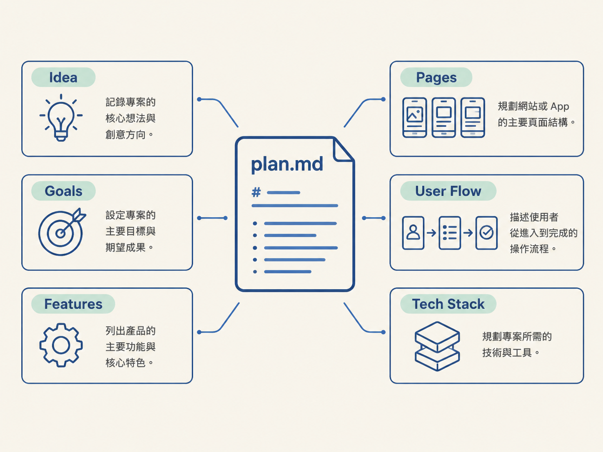

plan.md 是放在專案根目錄、用 Markdown 撰寫的 app 計畫文件，把訪談後確定的點子、目標、功能、頁面、使用者流程和技術堆疊整理成一份規格，方便之後查閱和實作。
規劃完成後，決定通常散落在對話紀錄裡：包含你的回答、agent 的推薦，以及你曾經推翻的方案。plan.md 會把這些結論收斂成固定格式，讓你或 agent 不必重新翻找對話，就能知道這個 app 要做什麼、有哪些畫面，以及採用哪些技術。
這份文件也是規劃與實作之間的銜接點：之後會拿它來生成 UI 設計，以及拆解功能與開發步驟。
一份 plan.md 包含以下六個欄位：

| 欄位 | 記錄內容 | 內容示例 |
|---|---|---|
| Idea 點子 | app 是什麼、給誰使用、要解決什麼問題 | 給一般人的拍照熱量追蹤工具 |
| Goals 目標 | 這一版要達成的結果 | 做出一個能動的 demo，先支援 iOS |
| Features 功能 | 有哪些功能，以及各功能的用途 | 拍照分析、手動修正數字、歷史紀錄 |
| Pages 頁面 | app 包含哪些畫面 | 登入、onboarding、首頁、拍照、個人頁 |
| User Flow 使用者流程 | 使用者從打開 app 到完成任務的畫面順序 | onboarding → 登入 → 首頁 → 拍照 → 回列表 |
| Tech Stack 技術堆疊 | 登入、後端、樣式與其他技術選型 | Clerk、Neon + Drizzle、trigger.dev |
plan.md 不需要花俏；只要六個欄位齊全，而且每一項都有具體內容即可：
# Plan — Cal AI Clone
## Idea
一個給一般人的拍照熱量追蹤 app；使用者拍下餐點，AI 回傳熱量與三大營養素。
## Goals
做出一個能動的 demo，先支援 iOS，功能之後再逐步補上。
## Features
- 填寫年齡／身高／體重／目標，由 AI 計算每日熱量目標
- 拍照上傳並由 AI 分析營養成分
- 使用者可手動修正 AI 回傳的數字
- 首頁顯示當日餐點紀錄與連續打卡天數
## Pages
登入、Onboarding、首頁、拍照、個人頁。
## User Flow
Onboarding（填資料 → 看目標）→ 登入 → 首頁 → 拍照 → 分析完成回列表。
## Tech Stack
Expo + React Native、Clerk（登入）、Neon Postgres + Drizzle、
trigger.dev（背景分析）、ImageKit（圖片）、Sentry（監控）、OpenAI。plan.md 是檔案，因此 agent 必須處於可以寫檔的狀態才能建立它。以 Codex 為例，開啟 plan mode 時只會討論，不會產生檔案；要先退出該模式，才能寫入 plan.md。
建立後，agent 會依照文件逐項實作。文件中的每一條都可能被視為待辦事項，因此描述越模糊，執行結果也越模糊。
plan.md 也不是授權 agent 無條件自動執行的文件。真實專案仍需要人工檢視產出；如果某個決定與產品價值衝突，應回頭修改文件，而不是讓錯誤的計畫繼續往下展開。
plan.md 至少會被用在兩個地方：
所以 plan.md 會把前面訪談與取捨的結果變成一份共同文件，之後生成 UI、拆解功能、實作時都可以拿來查。
plan.md 是放在專案根目錄、用 Markdown 寫成的 app 計畫文件，固定包含 idea、goals、features、pages、user flow、tech stack 六個欄位。它由訪談結果整理而成，後續可用於生成 UI 設計，以及拆解與實作功能。建立前要確認 agent 處於可寫檔的狀態；建立後仍需人工檢視，不能把它視為無條件自動執行的授權書。
六個欄位填完，規劃階段的內容就有了固定落點：訪談結果整理進 plan.md，之後的 UI 設計和功能實作都從這份文件展開。